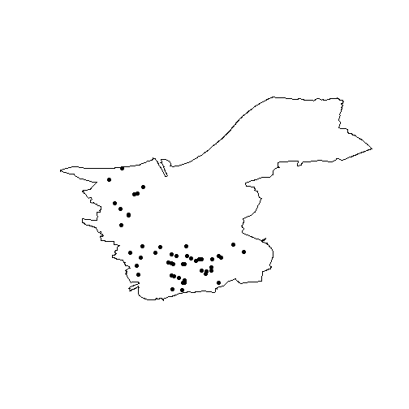

Introduction
open311 is an international open-access standard for civic issue management and public service communication. The standard allows administrations to better manage citizen requests, citizens to more easily participate in administrative work, and researchers and data scientists to access data regarding public service communication. As an open standard, open311 is not a centralized API, but a framework implemented by various cities (e.g. San Francisco, CA, Chicago, IL, Cologne, DE, Turku, FI, Zurich, CH) and services (e.g. SeeClickFix, FixMyStreet).
It is way past the golden age of open311 APIs and much of development in civic issue tracking has shifted to less open-access and less standardized alternatives. Many former prime examples have abandoned or severely limited their open311 endpoints. Nonetheless, open311 still constitutes a valuable source for open government data. Many cities and services still maintain an open311 service.
r311 allows the seamless management and selection of
endpoints and retrieval of service and request data. It supports (but
does not depend on) many popular R frameworks such as the tidyverse,
sf and xml2 for response formatting.
r311 is designed to be slim, both in content and
dependencies. It imports only two import-less packages used for HTTP
response handling. The functionality is limited to two main
features:
- Endpoint management
- Sending requests
This vignette will briefly cover these two features.
Endpoints
Since open311 is an open and decentralized standard, there is not one but many endpoints that one can access. An endpoint is commonly implemented by a city administration, but can also be managed by a service provider such as FixMyStreet. Each endpoint can define multiple jurisdiction IDs, although, in practice, most endpoints only define a single jurisdiction.
It can thus be difficult to manage the multitude of endpoints and
jurisdictions. Efforts have been made to list open311 servers, but most
of them are incomplete or outdated. r311 offers an updated
and modifiable endpoint list that defines a number of open311
implementations that are defined for use in the package. The list can be
read using o311_endpoints.
Load the package:
o311_endpoints()
#> # A tibble: 69 × 12
#> name root docs jurisdiction key pagination limit json dialect deprecated deprecated_reason deprecated_url
#> <chr> <chr> <chr> <chr> <lgl> <lgl> <int> <lgl> <chr> <lgl> <chr> <chr>
#> 1 Annaberg… http… http… annberg-buc… FALSE TRUE 50 TRUE Mark-a… TRUE switched https://buerg…
#> 2 Blooming… http… <NA> bloomington… FALSE TRUE 1000 TRUE uReport FALSE <NA> <NA>
#> 3 Bonn, DE http… http… bonn.de FALSE TRUE 100 TRUE Mark-a… FALSE <NA> <NA>
#> 4 Boston, … http… http… <NA> FALSE TRUE 50 TRUE Connec… FALSE <NA> <NA>
#> 5 Brooklin… http… http… brooklinema… FALSE TRUE 50 TRUE Connec… FALSE <NA> <NA>
#> 6 Austin, … http… http… <NA> FALSE TRUE 50 TRUE Connec… FALSE <NA> <NA>
#> 7 Chicago,… 311a… 311a… cityofchica… FALSE TRUE 50 TRUE Connec… FALSE <NA> <NA>
#> 8 Newport … http… http… cityofnewpo… FALSE TRUE 50 TRUE Connec… FALSE <NA> <NA>
#> 9 San Dieg… http… http… sandiego.gov FALSE TRUE 50 TRUE Connec… FALSE <NA> <NA>
#> 10 Köln / C… http… <NA> stadt-koeln… FALSE TRUE 50 TRUE Mark-a… FALSE <NA> <NA>
#> # ℹ 59 more rowsThe list does neither claim comprehensiveness nor up-to-dateness. It
arguably provides some of the most important and easily accessible
endpoints as of 2026. However, r311 also offers the ability
to add new endpoints to o311_endpoints using
o311_add_endpoint. You need to provide a name (for lookup)
and a root URL (the URL used to send requests). The following code adds
the open311 test server of Mecklenburg-Vorpommern, Germany.
o311_add_endpoint(
name = "MV Test",
root = "https://klarschiff-mv.sis-schwerin.de/backoffice/citysdk/",
jurisdiction = "rostock.de"
)Retrieving the endpoints list again confirms that you successfully added a new row to the endpoints dataframe.
nrow(o311_endpoints())
#> [1] 70You can now select the Rostock test API to the session using
o311_api. This function matches an API using endpoint name
and jurisdiction ID and attaches it to the active session. Query
functions automatically detect the attached API.
o311_api("MV Test")After attaching an API, o311_ok confirms that the
selected endpoint is able to handle request queries.
o311_ok()
#> [1] TRUEAs the result is TRUE, you can safely start receiving
real request data.
Making requests
After selecting an API and attaching it to the session, all functions can access it. You can now make requests.
Services
To get an overview of the available services in a jurisdiction, you
can use o311_services, which returns a list of Rostock’s
administrative services.
o311_services()
#> # A tibble: 183 × 8
#> service_code service_name description metadata type keywords group group_id
#> <chr> <chr> <lgl> <lgl> <chr> <chr> <chr> <int>
#> 1 127 Ampel behindertengerecht gestalten NA FALSE realtime idea Barrierefreiheit 11
#> 2 128 Ampelschaltung ändern NA FALSE realtime idea Barrierefreiheit 11
#> 3 129 Bordstein absenken NA FALSE realtime idea Barrierefreiheit 11
#> 4 130 Zugang rollstuhlgerecht gestalten NA FALSE realtime idea Barrierefreiheit 11
#> 5 131 Ampelschaltung ändern NA FALSE realtime idea Fahrradverkehr 12
#> 6 132 Beleuchtung verändern NA FALSE realtime idea Fahrradverkehr 12
#> 7 133 Beschilderung/Markierung ändern NA FALSE realtime idea Fahrradverkehr 12
#> 8 134 Beschilderung/Markierung einführen NA FALSE realtime idea Fahrradverkehr 12
#> 9 135 Bordstein absenken NA FALSE realtime idea Fahrradverkehr 12
#> 10 136 Fahrradständer aufstellen NA FALSE realtime idea Fahrradverkehr 12
#> # ℹ 173 more rowsRequests
To get data about civic issues in the city area, run
o311_requests.
o311_requests()
#> Simple feature collection with 50 features and 15 fields
#> Geometry type: POINT
#> Dimension: XY
#> Bounding box: xmin: 11.36877 ymin: 53.38495 xmax: 13.31174 ymax: 54.20873
#> Geodetic CRS: WGS 84
#> # A tibble: 50 × 16
#> service_request_id status_notes status service_code service_name description agency_responsible service_notice
#> <int> <chr> <chr> <int> <chr> <chr> <chr> <lgl>
#> 1 132 <NA> revie… 129 Bordstein a… "testidee" Landkreis MSE NA
#> 2 163 <NA> revie… 2 Papierkorb/… "Der Papie… Beschwerdemanagem… NA
#> 3 251 <NA> recei… 3 Ampel schad… "redaktion… LK-LUP-Verkehr NA
#> 4 285 <NA> revie… 3 Ampel schad… "Hier geht… LK-LUP-Verkehr NA
#> 5 264 Dieses Problem m… in_pr… 4 bauliche Ge… "Hier befi… LK-LUP-Verkehr NA
#> 6 268 <NA> recei… 4 bauliche Ge… "redaktion… Bauamt - Goldberg… NA
#> 7 213 <NA> recei… 117 Wegereinigu… "redaktion… Forstamt NA
#> 8 292 <NA> in_pr… 5 Beleuchtung… "Die Daten… Standardzuständig… NA
#> 9 168 <NA> recei… 145 Haltestelle… "redaktion… Verkehr LK Rostock NA
#> 10 295 <NA> revie… 2 Papierkorb/… "Die Daten… Standardzuständig… NA
#> # ℹ 40 more rows
#> # ℹ 8 more variables: requested_datetime <chr>, updated_datetime <chr>, expected_datetime <lgl>, address <chr>,
#> # adress_id <lgl>, media_url <chr>, zipcode <lgl>, geometry <POINT [°]>Using the output of o311_services, you can further
narrow down the output of requests. Open311 defines a set of standard
parameters which are implemented by all endpoints. Using the
service_code parameter with one of the previously returned
service codes, only complaints about broken traffic lights are
returned.
o311_requests(service_code = "3")
#> Simple feature collection with 6 features and 15 fields
#> Geometry type: POINT
#> Dimension: XY
#> Bounding box: xmin: 11.84164 ymin: 53.38651 xmax: 12.31198 ymax: 54.20656
#> Geodetic CRS: WGS 84
#> # A tibble: 6 × 16
#> service_request_id status_notes status service_code service_name description agency_responsible service_notice
#> <int> <chr> <chr> <int> <chr> <chr> <chr> <lgl>
#> 1 166 Verstanden. in_pr… 3 Ampel schad… redaktione… Bauamt (Amt Rosto… NA
#> 2 158 <NA> revie… 3 Ampel schad… Die Ampel … Straßenmeisterei … NA
#> 3 251 <NA> recei… 3 Ampel schad… redaktione… LK-LUP-Verkehr NA
#> 4 173 Vorgang wurde zur… in_pr… 3 Ampel schad… Ampel scha… Regional-Administ… NA
#> 5 250 Vielen Dank für d… in_pr… 3 Ampel schad… Ampel ausg… LK-LUP-Verkehr NA
#> 6 285 <NA> revie… 3 Ampel schad… Hier geht … LK-LUP-Verkehr NA
#> # ℹ 8 more variables: requested_datetime <chr>, updated_datetime <chr>, expected_datetime <lgl>, address <chr>,
#> # adress_id <lgl>, media_url <lgl>, zipcode <lgl>, geometry <POINT [°]>Similarly, using a service_request_id from the output,
you can retrieve a single service request from the API.
o311_request("250")
#> Simple feature collection with 1 feature and 15 fields
#> Geometry type: POINT
#> Dimension: XY
#> Bounding box: xmin: 11.86831 ymin: 53.43376 xmax: 11.86831 ymax: 53.43376
#> Geodetic CRS: WGS 84
#> # A tibble: 1 × 16
#> service_request_id status_notes status service_code service_name description agency_responsible service_notice
#> <int> <chr> <chr> <int> <chr> <chr> <chr> <lgl>
#> 1 250 Vielen Dank für d… in_pr… 3 Ampel schad… Ampel ausg… LK-LUP-Verkehr NA
#> # ℹ 8 more variables: requested_datetime <chr>, updated_datetime <chr>, expected_datetime <lgl>, address <chr>,
#> # adress_id <lgl>, media_url <lgl>, zipcode <lgl>, geometry <POINT [°]>Bulk queries
Many endpoints define a page limit meaning that responses are divided
into pages. A query without parameters returns the first page.
Pagination can be controlled with the page argument. To
control pagination, the o311_request_all function can come
in handy. It automatically iterates through pages and heuristically
decides when to stop. The following example retrieves data from the
first two pages, resulting in a tibble with 200 service requests.
o311_api("Cologne")
o311_request_all(max_pages = 2)
#> Simple feature collection with 200 features and 11 fields
#> Geometry type: POINT
#> Dimension: XY
#> Bounding box: xmin: 6.829709 ymin: 50.8518 xmax: 7.104094 ymax: 51.05517
#> Geodetic CRS: WGS 84
#> # A tibble: 200 × 12
#> service_request_id title description address_string service_name requested_datetime updated_datetime status
#> <chr> <chr> <chr> <chr> <chr> <chr> <chr> <chr>
#> 1 30194-2025 #30194-2025 … "Mülleimer… 51145 Köln - … Wilder Müll 2025-11-02T20:02:… 2025-11-03T12:3… closed
#> 2 30195-2025 #30195-2025 … "Gebündelt… 51065 Köln - … Wilder Müll 2025-11-02T20:09:… 2025-11-03T12:3… closed
#> 3 30196-2025 #30196-2025 … "Müllsack … 50679 Köln - … Wilder Müll 2025-11-02T20:24:… 2025-11-03T12:3… closed
#> 4 30197-2025 #30197-2025 … "Schlagloc… 51069 Köln - … Defekte Obe… 2025-11-02T21:35:… 2025-11-03T13:4… closed
#> 5 30198-2025 #30198-2025 … "Der Kleid… 51145 Köln - … Altkleiderc… 2025-11-02T22:52:… 2025-12-07T21:2… closed
#> 6 30199-2025 #30199-2025 … "Seid läng… 51107 Köln - … Defekte Obe… 2025-11-03T06:26:… 2025-11-04T09:1… closed
#> 7 30200-2025 #30200-2025 … "Die gesam… 50676 Köln - … Leuchtmitte… 2025-11-03T06:40:… 2025-12-05T21:2… closed
#> 8 30201-2025 #30201-2025 … "Großer Mü… 51103 Köln - … Wilder Müll 2025-11-03T07:45:… 2025-11-03T13:2… closed
#> 9 30202-2025 #30202-2025 … "Laut Schi… 50735 Köln - … Straßenbaus… 2025-11-03T08:13:… 2025-12-04T03:2… closed
#> 10 30203-2025 #30203-2025 … "Linksabbi… 51103 Köln - … Kfz-Ampel d… 2025-11-03T08:25:… 2025-12-03T18:2… closed
#> # ℹ 190 more rows
#> # ℹ 4 more variables: media_url <chr>, status_note <chr>, service_code <chr>, geometry <POINT [°]>Non-standard parameters
r311 implicitly supports API extensions introducing
custom paths and parameters. One such API is Klarschiff Rostock which is
based on CitySDK. Klarschiff CitySDK defines a number of non-default
paths and parameters which extend the filtering abilities of open311
requests. Available parameters can usually be found in the respective
documentation (e.g. on GitHub for Klarschiff
CitySDK). The following query returns the last 50 requests tagged
with the “idea” keyword.
o311_api("Rostock, DE")
tickets <- o311_requests(keyword = "idea", max_requests = 50)
tickets
#> Simple feature collection with 50 features and 15 fields
#> Geometry type: POINT
#> Dimension: XY
#> Bounding box: xmin: 12.02807 ymin: 54.06587 xmax: 12.18612 ymax: 54.178
#> Geodetic CRS: WGS 84
#> # A tibble: 50 × 16
#> service_request_id status_notes status service_code service_name description agency_responsible service_notice
#> <int> <chr> <chr> <int> <chr> <chr> <chr> <lgl>
#> 1 43372 <NA> recei… 111 Ampelschalt… "redaktion… Tiefbauamt (Unter… NA
#> 2 87716 <NA> recei… 103 Haltestelle… "redaktion… Amt für Stadtentw… NA
#> 3 65397 <NA> recei… 89 Zugang roll… "redaktion… Tiefbauamt (Unter… NA
#> 4 64554 <NA> recei… 89 Zugang roll… "redaktion… Tiefbauamt (Unter… NA
#> 5 76572 <NA> revie… 111 Ampelschalt… "Der nächs… Tiefbauamt (Unter… NA
#> 6 42031 <NA> recei… 111 Ampelschalt… "redaktion… Tiefbauamt (Unter… NA
#> 7 76573 <NA> revie… 111 Ampelschalt… "Erster Ve… Tiefbauamt (Unter… NA
#> 8 90650 <NA> revie… 110 Spielplatz … "Hier soll… Amt für Kultur, D… NA
#> 9 69444 "Danke für Ihren… in_pr… 110 Spielplatz … "wäre es m… Amt für Stadtgrün… NA
#> 10 83507 "" in_pr… 118 Schutzhütte… "Lichtenha… Tiefbauamt (Unter… NA
#> # ℹ 40 more rows
#> # ℹ 8 more variables: requested_datetime <chr>, updated_datetime <chr>, expected_datetime <chr>, address <chr>,
#> # adress_id <lgl>, media_url <chr>, zipcode <lgl>, geometry <POINT [°]>Some custom parameters can also alter the shape of the output. In the
following example, we query just the count of total requests using the
just_count parameter. The result is a 1×1 tibble containing
a count value.
o311_requests(just_count = TRUE)
#> # A tibble: 1 × 1
#> value
#> <int>
#> 1 2819The CitySDK extensions also offers additional URL paths which can be
queried using the generic o311_query function.
poly <- o311_query("areas")
plot(poly$grenze)
plot(tickets$geometry, add = TRUE, pch = 16)
Cleanup
Endpoint data is stored persistently between sessions so that you can
create your own database of open311 endpoints. This database is stored
in the system’s user directory as returned by
tools::R_user_dir("r311"). To reset the database, run
This will default back to the endpoints defined by r311
and remove all endpoints manually added by
o311_add_endpoints.